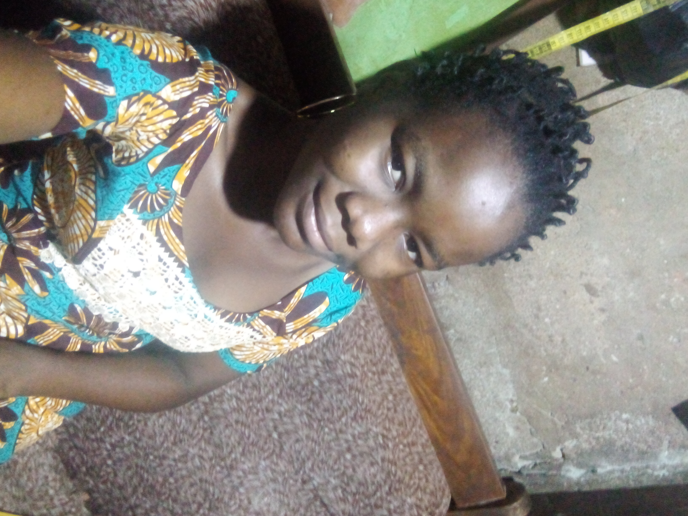

I-DESCRIPTION
Je m'appelle HOUEHO Ariane,je suis dans ma dix-septième année et étudiante en première année à l'ENEAM.Je fais l'Informatique de Gestion,spécialement l'Administration des Réseaux Informatiques avec mon baccalauréat série D.
II-DIPLOMES
- Certificat d'Etudes Primaires 2014 à l'Ecole Primaire Publique de Guézin Kpota
- Brevet d'Etudes du Premier Cycle 2018 au Collège Catholique d'Agatogbo-Guézin
- Baccalairéat série D au Collège d'Enseignement Général de Davié (Porto-Novo)
III-COMPETENCES LINGUISTIQUES ET ATOUTS
- Maîtrise courante du français à l'écrit et à l'oral et moyenne de l'anglais
- Maîtrise courante du Pédah,du mina et du fon (langues maternelles) à l'oral,et moyenne à l'écrit
- Maîtrise de l'outil informatique(Word,Excel)
IV-LOISIRS
J'aime bien écouter de la musique pour me divertir,faire des voyages en famille,jouer à des jeux sur mon smartphone. J'ai une grande passion pour l'art culinaie,surtout pour la pâtisserie.J'aime aussi pratiquer des activités sportives.